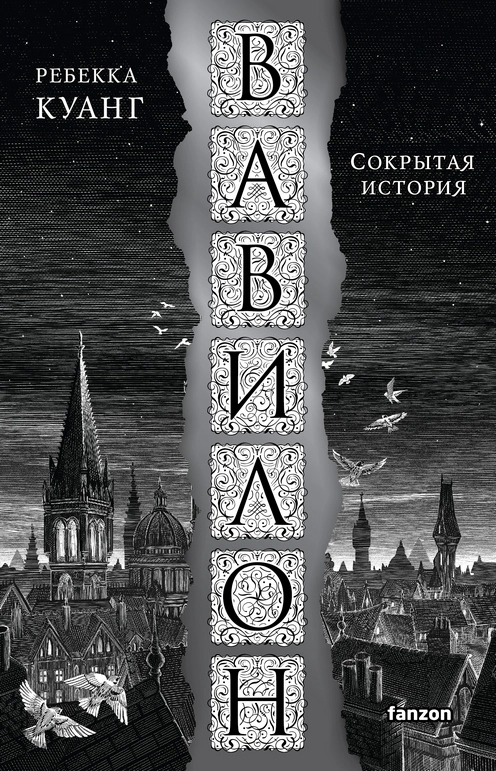

страница является местом, где вы можете найти мнение таких же читателей как и вы, на любую книгу.
Дэнс, дэнс, дэнс Харуки Мураками ★ 4.1
Иногда Харуки Мураками меня загоняет в угол своими книгами. Начала читать - словила явные отголоски "Охоты на овец", чуть дальше уже вырисовываться начинает "Хроника заводной птицы". Но потом уже сюжет стал именно относится к заявленной теме. Честно говоря я не ожидала в этой книге поймать символизм как признак новой жизни, да ещё вприкуску с мистическим реализмом. Но это был очень интересный книжный опыт. Скажу сразу ,что данная книга не для всех читателей, а именно для тех кто отлично понимает немного странные миры, которые может создавать только Харуки Мураками. И тот кто уж точно не забросит книгу в дальний угол и заречется близко подходить к этому автору. Символизм... Как-то я не думала, что снова мне придется встречать этот жанр в своей жизни. Хотя в школе с собой теплотой любила...
...именно его. Но здесь удивительный поворот делает символизм и сопоставляется старое и новое. Одно название, но разные судьбы. Попытка разобраться что же стало с прежним миром и почему общество словно взбесилось от денег. Любопытное произведение. Отель как символ разлада или все же богатства? Вот над таким интересным вопросом "бьётся" наш уважаемый писатель. Читаешь, размышляешь и понимаешь, что вряд ли можно найти правду, когда за все уплачено и истины больше нет. Миром правит деньги, роскошь и богатство. Удивительное сильное впечатление производит "Дэнс, Дэнс, Дэнс" и ты понимаешь почему книга так названа. Ответ есть в самом произведении, только внимательным людям он открывается. Плоховатая любовная история покрывается мистической историей отеля "Дельфин" и тебя словно периной накрывает вся эта мистика. Сначала я думала, что наш уважаемый герой будет из рода "инопланетян" и придется копаться в его душе, слушать его нытье и наблюдать вечную рефлексию, но нет. Попав в отель наш герой меняется и начинается самая удивительная история. Я всегда знала ,что Харуки Мураками мастер психологии личности, но чтобы именно таким образом показать куда приведут деньги, ещё никому пожалуй не удавалось. Можно конечно привести пример "Американской трагедии" Драйзера, но там немного иное , чем заложено именно в " Дэнс, Дэнс Дэнс". Неплохое произведение, но только для тех, кто понимает и ценит творчество Харуки Мураками. Есть над чем подумать, поразмышлять.
Любимые цитаты:
Раньше я думал, люди взрослеют год от года, постепенно так... А оказалось – нет. Человек взрослеет мгновенно.
Читая чужие биографии, мы словно требуем некой компенсации за то, что в наших собственных жизнях не случается, ни черта...
Не затыкай ушей — и то, что нужно, само подаст голос. Не зажмуривай глаз — то, что нужно, само покажется,
Поющие в терновнике Колин Маккалоу ★ 3.9
Книга была в списке обязательно прочитать, но после урывками смотренного в детстве сериала меня что-то никак не тянуло к ней. Наконец - прочитано! Ооочень гнетущее впечатление произвела на меня эта история - до чтения я знала только, что в романе речь будет идти о нескольких поколениях одной семьи и запретной любви священника. Но то, насколько это будет неприятное чтение, я даже не могла представить. Самое странное - действие происходит в Новой Зеландии, Австралии и Ватикане - крайне милых моему сердце регионах планеты, и, казалось бы, мне должно быть приятно читать. Но то, что и как там происходит, совсем не радужно: пожары, засуха, заживо сгоревшие, вши, жуткие людские пороки, жадность и лицемерие, ненависть к своим близким, манипуляции - всё это всплывает наружу в каждой главе. У героев как будто автор отрезала любые жизненные радости и пытается представить это как...
...норму. Самое неприятное - это герои, у меня редко бывает, что в книге нет ни одного симпатичного для меня персонажа. Но вот у Маккалоу так получилось, что мне вроде и было местами интересно читать, но в жизни я бы не хотела общаться ни с одним из героев. Самое ужасное для меня в жизни - это грубость и равнодушие родителей к детям и принятие решений во вред себе якобы из-за желания кому-то что-то доказать (хотя всем плевать). Тут это встречается повсеместно. И герои, даже наделённые вроде бы автором возможностью любить, невзирая на тяжёлое детство, ведут себя отвратно. Как пример Мэгги, которая якобы любит Ральфа и Дэна больше всего на свете. Одному она мстит непонятно за что и сначала выходит замуж за самого стрёмного ухажёра, а потом скрывает от него всю жизнь факт наличия сына, а ко второму даже не приезжает в Рим на самое важное для него событие в его церковной жизни. Если выбирать, то я бы сказала, что мне был интереснее всего всё же Ральф. Я всегда считала, что все эти лицемерные католические запреты только усугубляют и так шаткую порой позицию священнослужителей. И после прочтения книги я только укрепилась в своим мыслях. Если возводить любовь и чудо продолжения жизни в абсолют счастья, данного богом, то терзания Ральфа (и любого другого его «коллеги») от чувств к Мэгги уходят совсем не в то русло. Название романа намекает на какую-то жертвенность, но я не увидела ни у одного героя поступков, хоть немного это напоминающих. Оценка высокая, тк я всегда оцениваю книги по своему эмоциональному отклику, и он был довольно сильным. Но читать было местами очень грустно и отсутствие приятных мне героев расстроило, я настраивалась на более позитивное впечатление после прочтения.
Любимые цитаты:
Только попробуй полюбить человека — и он тебя убивает. Только почувствуй, что без кого-то жить не можешь, — и он тебя убивает.
Никому и никогда не испытать чужую боль, каждому суждена своя.
Я никогда тебя не забуду, до самой смерти не забуду. А жить я буду долго, очень долго, это будет мне наказанием.

Вавилон. Сокрытая история Ребекка Куанг ★ 4
Лингвистическая криптоистория от Ребекки Куанг. Крипто - значит "скрытое", а криптоистория - это когда автор говорит: "Забудьте, чему вас учили и что, как вам кажется, вы знаете о мире. На самом деле все было так, так и так, а реальностью управляют вот эти скрытые силы". Выстраивая совершенно невероятную конспирологическую систему, в которую хочется верить, как сделали Джон Краули с "Эгиптом" или Лазарчук и Успенский с "Посмотри в глаза чудовищ". Мир "Вавилона" практически не отличается от нашего, кроме лингвистической магии перевода. Тут смотрите, какая штука: перевод без искажения невозможен, между понятиями, даже самыми простыми, нельзя поставить знак равенства. Каждый народ наполняет их естественными для себя смыслами, возьмем такое, казалось бы, всеобщее, как хлеб: для бывших советских людей это кирпичик, для француза багет, для таджика лепешка. Понятно, что это грубое приближение, но суть ясна: и вода, и воздух в переводе не идентичны, что уж говорить об отвлеченных понятиях. Магия в истории Куанг аккумулируется в том самом семантическом "кармане", а если каждое из пары слов двух языков еще и обладает дополнительными значениями, включая словесные игры, архаизмы, омонимию, жаргон, etc - то все они обогащают семантический ряд, делают магию более...
...действенной. Технически это выглядит как гравировка слова с переводом на двух сторонах серебряной пластины (можно на посеребренной, да хоть на дощечке, но эффект на порядок усиливает именно серебро). С ним транспорт едет быстрее, лампы светят ярче, еда вкуснее и сытнее, обучение эффективнее и качество жизни в целом лучше. Оружие стреляет дальше и более метко. Именно на эффекте серебряных пластин построена в романе британская экспансия. Магия возобновляемый ресурс и работает лишь тогда, когда слово награвировано человеком, владеющим обоими языками равно хорошо, механическое копирование не дает эффекта. А для того, чтобы усилить рычаги воздействия на покоренные и ограбленные колонии, Империя привлекает на службу представителей коренных народов, которых с младенчества воспитывают билингвами. Выученный язык не раскрывается в полноте усвоенного естественным путем. Полукровка из Кантона, который станет для нас Робином Свифтом, рос в трущобном районе, однако с английской бонной, которой кто-то платил за неотлучное пребывание с ним; пережил всех родных, погибших от холеры, был спасен английским профессором посредством серебряной облатки; вывезен в Лондон, где с ним занимались преподаватели классических языков. После поступил в Оксфорд на факультет Вавилон (да-да, по ассоциации с Вавилонской башней и проклятием смешения языков). Здесь и башня своя имеется - самое высокое здание в Университете. Все прочие оксфордцы, в том числе столпы академической науки, лишь приложение к балаболам - так называют студентов и профессорский состав Вавилона. Не случайно, именно на них зиждется здание британского могущества. Назвать их положение привилегированным, значило бы сильно преуменьшить: отдельные комнаты, жизнь на полном обеспечении, недурная стипендия - при том, что прочие платят за учебу колоссальные суммы. А студенческое братство: индиец Рами, чернокожая гаитянка Виктуар, и дочь адмирала Летти (попавшая сюда за языковую одаренность и взамен погибшего брата) - очень скоро становится подлинной семьей не только для Робина, но и для всех его друзей. А теперь немного аналитики, прежде, чем перейти к грустному. Концепция, приводящая на память "Игру в бисер" Гессе восхитительна; магическая академия, хотя и смыленная тысячей клонов "Гарри Поттера", весьма недурна; мотивы "Тайной истории" тоже изрядно растиражированные подражателями. выглядят несколько утрированными и ненатуральными, но все это можно было бы оправдать, когда бы не чудовищный финал. В котором пепел Клааса начинает стучать в сердца тройки друзей, принадлежащих к угнетенному оксфордскому меньшинству, составляющему большинство в нашей студенческой компании. Превращая хорошую книгу в беззастенчиво манипулятивный, скверный по исполнению, навязчивый до назойливости, нудный перечень преступлений, совершенный англичанами в отношении покоренных народов.
Любимые цитаты:
Настал час отъезда, и мы пошли своим путем – я умирать, а ты жить. Что лучше – кто знает?
Поэт бежит по лугу без оглядки. Переводчик танцует в кандалах.